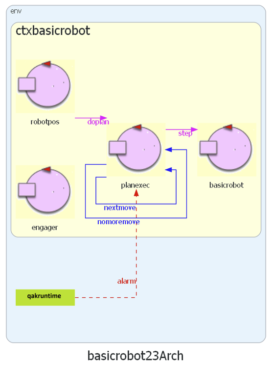
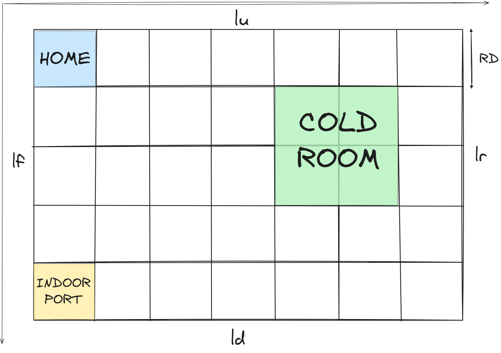

Introduction
Requirements
Requirement analysis
| ColdStorageService | il servizio che si richiede di progettare |
| Service area | stanza piana e rettangolare che comprende INDOOR port e Cold Room |
| INDOOR port | area di servizio dove viene scaricato il carico |
| Cold Room | container di deposito del carico, con capacità massima di MAXW kg |
| Transport trolley | interfaccia per l'utilizzo di un DDR robot, modellato come un quadrato con lato RD.
Posizionato inizialmente in | .
| Service Access GUI | interfaccia utente che consente di visualizzare il peso dei materiali attualmente nella Cold Room e mandare la richiesta di depositare ulteriori FW kg. Se la richiesta viene accettata, l'utente ottiene un ticket valido per un tempo TICKETTIME |
| Service Status GUI | interfaccia utente che consente ad un service manager di visualizzare lo stato del servizio |
| Sonar | dispositivo connesso ad un Raspberry Pi. Misura la distanza:
|
| Led | dispositivo connesso ad un Raspberry Pi. Il Led è:
|
| Truck driver | l'utente che usa il servizio |
Il committente fornisce
-
il
metamodello QActor per la modellazione del sistema (si veda QakActors24 per maggiori informazioni) -
il servizio BasicRobot23: un componente software che esegue comandi di
spostamento di un DDR robot in modo indipendente dalla tecnologia con cui questo è realizzato
(virtuale o reale).
Il servizio è realizzato ad attori: 
La
- dividere l'area in celle di dimensioni RD
- modellare INDOOR port e Cold Room come posizioni sulla mappa

Il BasicRobot23 introduce il concetto di mossa elementare
del robot: Request step:step(T)
- sposta il robot (con velocità prefissata) di una distanza RD in un tempo T
Possiamo quindi formalizzare il concetto di posizione introducendo una coppia di coordinate cartesiane che identifica una cella della mappa:
0 1 2 3 4 5 6 7 x
0 |r, 1, 1, 1, 1, 1, 1,
1 |1, 1, 1, 1, X, X, 1,
2 |1, 1, 1, 1, X, X, 1,
3 |1, 1, X, 1, 1, 1, 1,
4 |1, 1, 1, 1, 1, 1, 1,
5 |X, X, X, X, X, X, X,
y
- r: posizione corrente del robot
- X: cella occupata da un ostacolo
- 1: cella libera
La
- vedere il peso del carico attualmente nella ColdRoom
- inviare la richiesta di deposito di FW kg di cibo al ColdStorageService
- inserire il numero del ticket quando il Fridge truck raggiunge l'INDOOR port
Entrambe le interfacce possono essere inizialmente modellate anch'esse come attori.
Alarm requirements
Il committente fornisce il software di supporto per l'uso di
-
L'utente invia una richiesta tramite la Service Access GUI per depositare FW kg di carico.
Se la richiesta è accettata, deve arrivare alla
INDOOR port nel tempo TICKETIME, altrimenti la richiesta sarà rifiutata. -
Una volta accettata la richiesta, il ColdStorageService risponde con un messaggio charge taken e l'utente
lascia la
INDOOR port . -
Quando il ColdStorageService accetta una richiesta, viene inviato un messaggio al trolley, che deve raggiungere
la
INDOOR port e prendere il carico. In seguito, il trolley risponde con il messaggio charge taken e va alla ColdRoom. -
Quando finisce un'azione di deposito, il trolley può accettare un'altra richiesta - se presente - o tornare in
HOME . - Mentre il trolley è in movimento, i requisiti di allarme devono essere rispettati.
- La Service Status GUI può consentire di monitorare lo stato corrente del trolley, il peso del carico nella ColdRoom, il numero di richieste rifutate dall'inizio del servizio.
I key points 5, 6 saranno trattati in seguito, in quanto non parte significativa del core del servizio.
Problem analysis
Per realizzare un primo modello del sistema sulla base delle analisi, si sceglie di utilizzare il linguaggio di modellazione Qak fornito dal committente. Il metamodello
- consente di catturare gli aspetti essenziali del sistema
- offre l'astrazione
QActor per rappresentare le entità come componenti autonomi ed indipendenti.
L'architettura del sistema è la seguente:

Il sistema é costituito da due contesti:
-
ctxbasicrobot per il
basicrobot fornito dal committente -
ctxcoldstorageservice per
serviceaccessgui ,coldstorageservice etrolley
SERVICE ACCESS GUI
-
La
serviceaccessgui è modellata come un QActor che simula le interazioni dell'utente con il sistema -
sendrequest: invia la richiesta di storerequest al
coldstorageservice e attende una risposta che può essere- negativa: storerefused che porta allo stato endwork
- positiva: storeaccepted che porta allo stato sendticket
-
sendticket: si simula lo spostamento dell'utente all'
INDOOR e l'invio del numero del ticket alcoldstorageservice , che può accettare o meno il carico: chargetaken, chargerefused
COLD STORAGE SERVICE
-
Il
coldstorageservice definisce le variabili di sistema:- MAXW: carico massimo della
coldroom - TICKETTIME: tempo di validità del ticket
- Temp_load: lo stato del carico
- TicketNumber: per ottenere i numeri incrementali dei ticket
- MAXW: carico massimo della
- L'attore gestisce due possibili richieste: storerequest e ticketrequest
-
handlestore: si verifica che nella
coldroom ci sia abbastanza spazio per il carico:- storeaccepted: la richiesta viene accettata e viene generato il ticket
- storerefused: la richiesta viene rifiutata
-
handleticket: si calcola il tempo trascorso dall'emissione del ticket:
-
chargetaken: il tempo trascorso è minore di
TICKETTIME e la richiesta è accettata - chargerefused: il tempo trascorso è maggiore e la richiesta non è più valida
-
chargetaken: il tempo trascorso è minore di
TROLLEY
-
s0: il
trolley invia la richiesta di engage albasicrobot e attende l'esito positivo dell'operazione per passare allo stato waitrequest - waitrequest: attende la ricezione di una richiesta per andare in gotoindoor
- takeload: simula il caricamento del robot. Al termine, il robot dovrà inviare il messaggio di chargetaken
- gotocoldroom: simula lo spostamento del robot dalla
INDOOR allacoldroom - storeload: il robot scarica il carico nella
coldroom . Se non arrivano altre richieste torna inHOME - gohome: simula lo spostamento del robot in
HOME -
trolleyathome: stato finale in cui viene inviata la richiesta di disengage al
basicrobot
Test plans
Project
Piano di lavoro
| SPRINT1 |
|
| SPRINT2 |
|
| SPRINT3 |
|